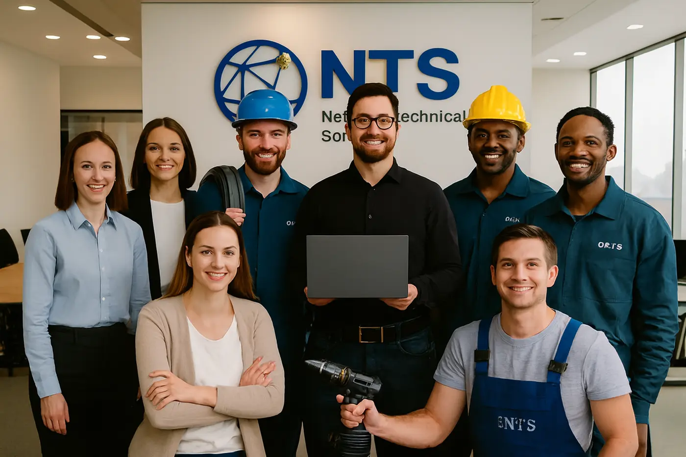

Soporte Técnico y Mesa de Ayuda
Atención y solución de incidentes tecnológicos que afectan el funcionamiento diario de los usuarios y equipos.
Soporte remoto y presencial, diagnóstico, mantenimiento y atención oportuna de requerimientos.
NTS – Network Technical Solutions
Profesionales a su servicio, con el calor humano que nos distingue
Servicio · Administración de TI
Gestión integral de los recursos tecnológicos de su empresa para garantizar continuidad, seguridad y eficiencia operativa.

Atención y solución de incidentes tecnológicos que afectan el funcionamiento diario de los usuarios y equipos.
Soporte remoto y presencial, diagnóstico, mantenimiento y atención oportuna de requerimientos.
Gestión y monitoreo de servidores, estaciones de trabajo y sistemas operativos.
Actualizaciones, control de usuarios, optimización y estabilidad de la infraestructura informática.
Administración y supervisión de redes de datos para garantizar conectividad segura y eficiente.
Configuración, monitoreo, diagnóstico de fallas y optimización del rendimiento de red.
Protección de la información y los sistemas contra accesos no autorizados, amenazas y vulnerabilidades.
Políticas de seguridad, control de accesos, antivirus, firewalls y buenas prácticas.
Implementación de soluciones de respaldo para proteger la información crítica de la empresa.
Planes de recuperación ante fallas, copias de seguridad y continuidad del negocio.